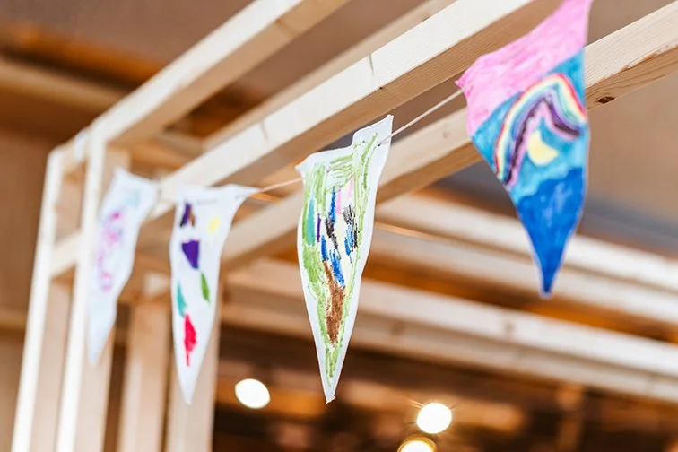
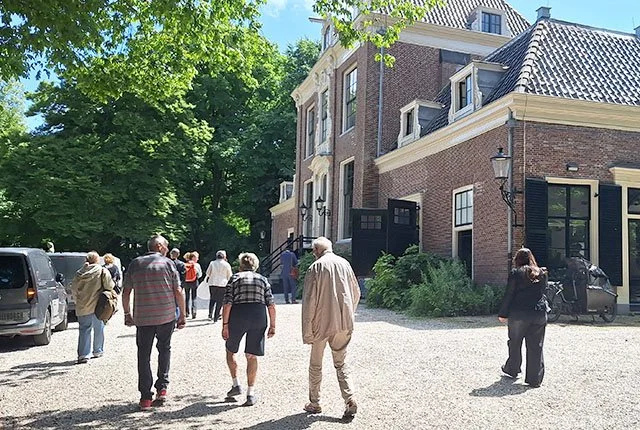
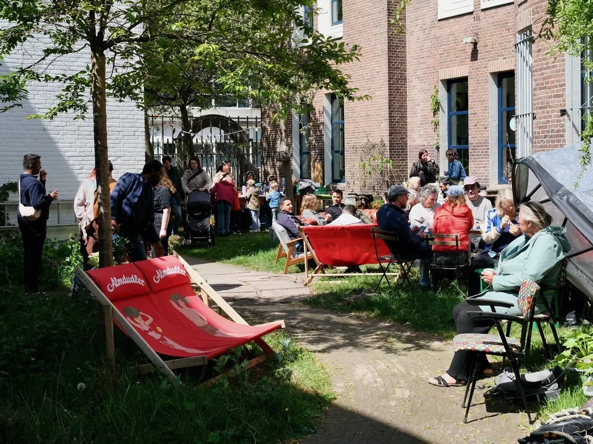
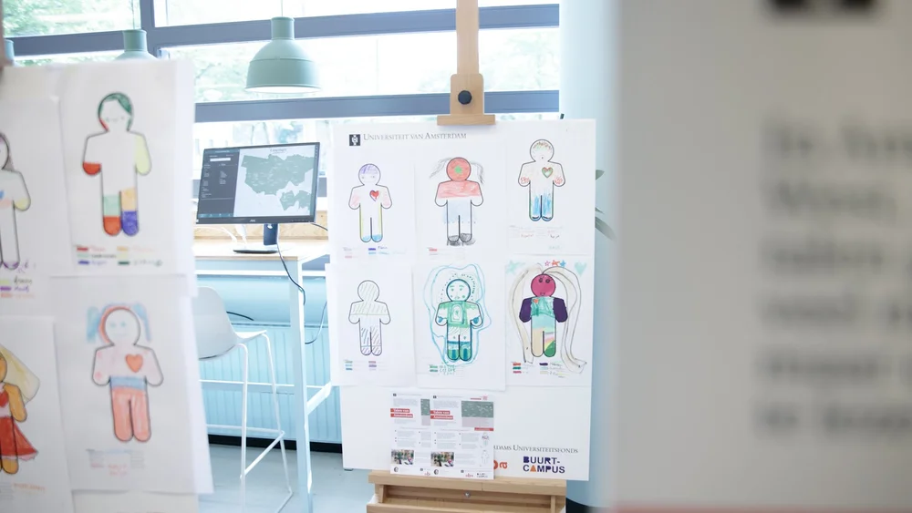

Buurtcampus Zuidoost
Op woensdag 24 september vieren we feest in Amsterdam Zuidoost: het éénjarig bestaan van OBA Ganzenhoef, dé jeugd- en jongeren bibliotheek van Zuidoost. Deze mijlpaal laten we natuurlijk niet ongemerkt voorbijgaan. OBA Ganzenhoef is meer dan alleen een bibliotheeklocatie; het is ook de thuisbasis van de Buurtcampus Zuidoost, waar het hele jaar door diverse activiteiten worden georganiseerd voor en samen met de buurt. De samenwerking tussen de OBA en de Buurtcampus zorgt voor een levendige en betrokken sfeer, waarin ontmoeting, ontwikkeling en ondersteuning centraal staan.

Buurtcampus Oost
Buurtcampus Oost heeft studenten van de opleiding IPZ gevraagd om vanaf oktober tot half januari elke woensdagochtend van 10.00 tot 11.00 een Natuurwandeling in het Frankendaelpark te ontwikkelen en organiseren. Aansluitend kunnen buurtbewoners een kopje koffie of thee drinken aan de grote ‘Oost-tafel’ bij OBA Linnaeus tijdens Bakkie in de Bieb.

Buurtcampus Oost
Bij restaurant Elixer In Amsterdam Oost wordt gewerkt aan een informatieve buurttuin: een plek waar buurtbewoners samen kunnen komen, tot rust kunnen komen én iets kunnen leren over eetbare natuur, gezondheid en de korte voedselketen. De tuin zal o.a. inheemse (eetbare) kruiden en bloemen bevatten en laat zien wat je kunt doen met een klein stuk groen in de stad. Studenten van de Module Food & Health Promotion (Voeding en Diëtetiek, FGSB, HvA) gaan geïnteresseerde buurtbewoners actief betrekken bij het project.

Buurtcampus Nieuw-West
In OBA Geuzenveld is sinds kort de allereerste tentoonstelling te zien: Talen van Amsterdam. Een bijzondere samenwerking tussen de Buurtcampus, de Universiteit van Amsterdam en de Hogeschool van Amsterdam.
De tentoonstelling laat zien hoe rijk en veelzijdig de talen in Nieuw-West zijn. Studenten van de universiteit en hogeschool spraken met bezoekers van de OBA en deelnemers aan activiteiten van de Buurtcampus over de talen die een rol spelen in hun leven. Die verhalen zijn vastgelegd in kleurrijke taalportretten en samen vormen ze een levende taalkaart van de stad.